遊びで植物を育てよう
2025/09/20
長年楽しませてもらったカーネーションが枯れました。
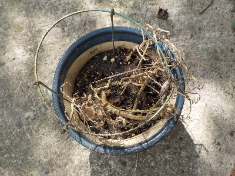
植え替えしないで育てていたので、秋の雨の加湿で枯れたかな。
減った分は挿し芽で増やせばいい気もしますが、今ある株だけでも十分かな。
【カーネーションTOP】
【花TOP】
【園芸TOP】
2024/08/03
カーネーション花が沢山終わったので挿し木しました。
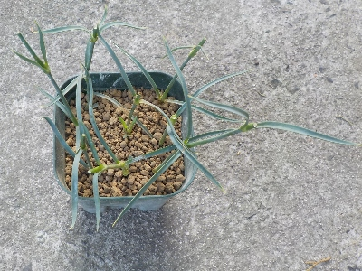
今日は終わった花の切り取り数が多かったので挿し木しました。
真夏なので失敗するかな？
【カーネーションTOP】
【花TOP】
【園芸TOP】
2024/07/07
カーネーションを木陰に移動しました。
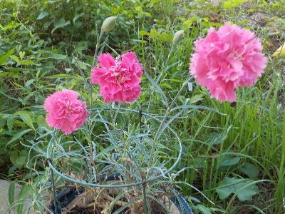
気温が高くなったので、カーネーションを日向から木陰に移動しました。
【カーネーションTOP】
【花TOP】
【園芸TOP】
2024/05/15
カーネーションが立ち上がって咲きました。
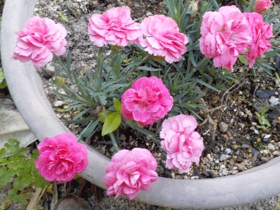
この背の低いカーネーションは今まで茎が横にはうように伸びてカッコ悪かったんですが、今回は土が合ってたみたいで茎がスッと立って花が咲きました。
この状態がキープできるといいんだけどな。
【カーネーションTOP】
【花TOP】
【園芸TOP】
2023/06/10
真ん中に植えた背の高いカーネーションが枯れました。
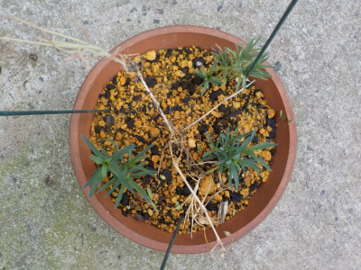
背の高いタイプのカーネーションだけ枯れました。
なんとなく背の低い園芸品種のカーネーションが弱くて、背の高い原種に近い方が強いって思っていたんですが逆でした。
詳しいことは分からないですが、背が高いカーネーションは取り扱いを慎重にしようと思います。
背の低いガーデンカーネーションは、家庭で育てる用に改良されているので強いのかな。
【カーネーションTOP】
【花TOP】
【園芸TOP】
2023/05/05
挿し芽のカーネーションが発根したので鉢に植えました。
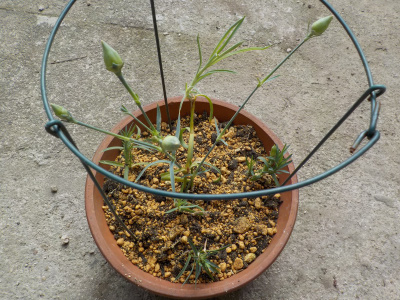
去年に秋冬に挿し芽したカーネーションを、植木鉢に植替えしました。これらはみんなしっかり根っこがあります。
外側は背が低いタイプで、内側は背が高いものです。
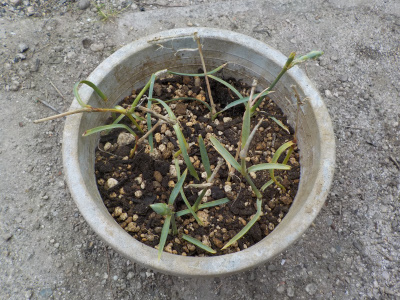
根が見えなかったり少ないものは、この鉢にまとめて植えました。
両方とも沢山咲いて欲しいです。
【カーネーションTOP】
【花TOP】
【園芸TOP】
2023/03/05
カーネーションの挿し芽追加です。
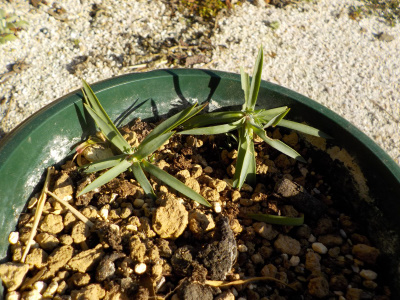
咲き終わった茎を捨てるのがもったいなくて、また挿し芽をすることにしました。
枯れてしまったシクラメンの鉢に挿しました。
【カーネーションTOP】
【花TOP】
【園芸TOP】
2023/01/15
カーネーションは1月でも咲いていいですね。
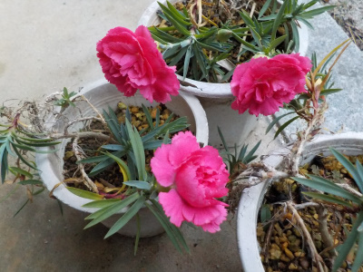
カーネーションが3つ咲きました。
まだ株が小さいのので寂しいですが、大きく育って花数が増えたら立派になりそうです。
今年は今のところ暖冬なので、たまたま咲いただけかもしれませんけど。
【カーネーションTOP】
【花TOP】
【園芸TOP】
2022/12/25
さすがに12月の屋外での挿し芽は無理かな。
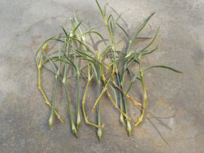
カーネーションの花が咲き終わったので、それを使って挿し芽をします。
もう寒いので発根は無理かなー。暖かくなるまで枯れないといいんだけど、どうなるでしょう。
育ったらラーッキーくらいの気持ちでやりました。
【カーネーションTOP】
【花TOP】
【園芸TOP】
2022/11/23
勤労感謝の日にカーネーションが咲きました。
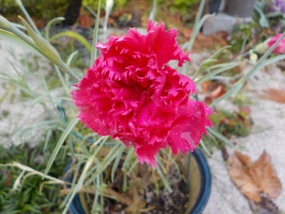
昔は言ってたかもしれないけど、最近勤労感謝の日に感謝したり感謝されたことってないな。
でも今年はカーネーションが咲いたので、カーネーションの花をもらった気分になれました。
ちょっと気分がいいですね。来年は勤労感謝の日には何か感謝しようと思いました。
【カーネーションTOP】
【花TOP】
【園芸TOP】
2022/11/20
約1か月カーネーションが咲きませんでした。
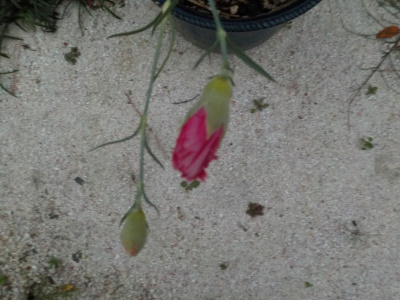
前回挿し芽をしてからカーネーションの花が咲いていません。
なのでカーネーションの挿し芽の追加をしていません。計画通りにいかないものですね。
この写真のツボミは咲きそうでなかなか咲かないです。
【カーネーションTOP】
【花TOP】
【園芸TOP】
2022/10/23
普通のカーネーションの挿し芽をしました。
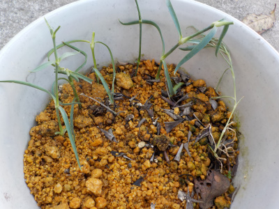
マミーキッスみたいな背丈の低いカーネーションもいいですが、茎がすらっと伸びたものの方がボリュームがあって見栄えがいいです。
全体が大きい分、茎や葉っぱが多いのでグリーンがキレイです。その中で赤やピンクの花が咲くので際立って目立ちます。
今回は花が終わった茎を切り取って、底面給水鉢に挿しました。これから花が終わった茎をドンドン追加して挿そうと思っています。
【カーネーションTOP】 【花TOP】 【園芸TOP】
2022/10/02
カーネーションのマミーキッスが枯れました。
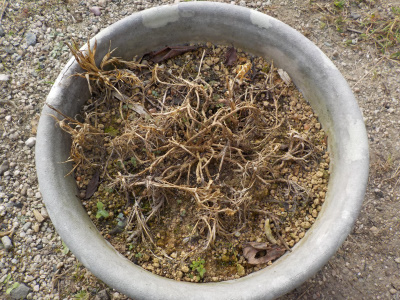
酷暑対策で日陰に置いてたら過湿のせいか枯れました。
同じ環境で育てた他の株は元気なので、原因は他にあるかもしれません。
植木鉢が大き過ぎたかな？
【カーネーションTOP】 【花TOP】 【園芸TOP】
2022/08/20
古いカーネーションの株はいつまで生きるんだろう。
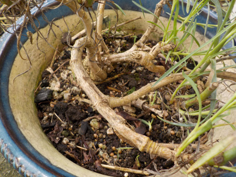
カーネーションは多年草なので何年も花を咲かせていますが、この古い株の寿命はあと何年なんだろう。
たぶん年々弱くなって行きますよね。長生きして欲しいです。
【カーネーションTOP】 【花TOP】 【園芸TOP】
2022/06/04
ポットのカーネーションを古いプラ鉢に植え替えしました。
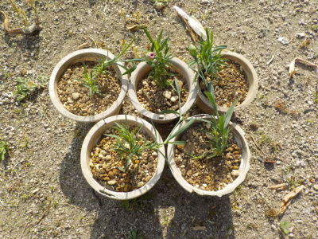
小さくて綺麗な鉢に植えたかったですが、余っている鉢がありませんでした。
ボロボロでも物を大切に使ってますよって感じが出るので、これはこれでいいかな。
次は鉢を買おうと思います。
【カーネーションTOP】 【花TOP】 【園芸TOP】
2022/05/14
挿し芽のカーネーションがとても可愛い。
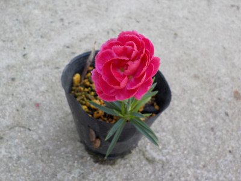
小さい茎1本に1つの花が咲いています。
コンパクトに完結してますね。サボテンみたい。
【カーネーションTOP】 【花TOP】 【園芸TOP】
2022/05/08
母の日のカーネーション。
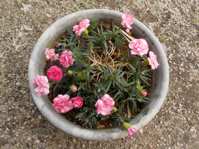
カーネーションは次々と咲いているので、まばらなのは仕方ないです。
茎が伸びすぎてるのと、鉢が大きいのを修正すれば見栄えが良くなりそうです。
3月末から花を楽しんでいるので、母の日って感じはしないです。
いつも咲いているのは有難いですが、季節感はないですね。
個人的にはパッと咲いて直ぐに散る花より、成長しながら長く咲く花の方が好きなので、このカーネーションは気にいっています。
【カーネーションTOP】 【花TOP】 【園芸TOP】
2022/04/24
挿し芽のカーネーションにツボミが出来ました。
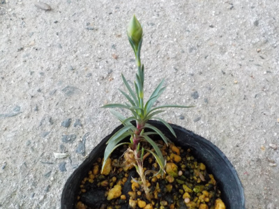
花を見るなら鉢に植え替えた方がいいけど、まだ苗が小さいからポットのまま置いておきます。
【カーネーションTOP】 【花TOP】 【園芸TOP】
2022/04/02
カーネーションの挿し芽をポットに分けました。
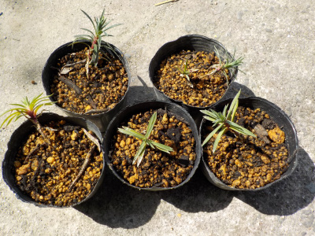
根っこがもの凄く伸びていたので、去年のうちに植え替えた方が良かったかもしれません。
根っこが絡み合ってて、だいぶ切りました。根っこが多いので、ポットよりももうちょっと大きな鉢に植えた方が良かったかもしれません。
【カーネーションTOP】 【花TOP】 【園芸TOP】
2022/03/27
カーネーションのマミーキッスが咲きました。
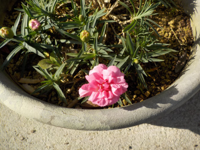
去年の5月末に買った時には花が咲いていませんでしたが、もう咲きました。
個体が大きくなったので開花が早くなったのかな。
【カーネーションTOP】 【花TOP】 【園芸TOP】
2022/03/21
カーネーションが咲きました。
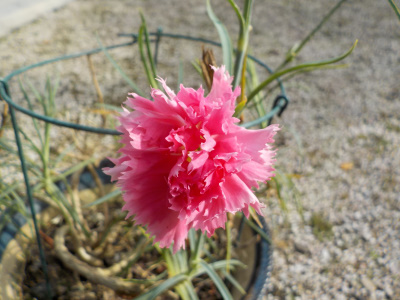
シワクチャのカーネーシィンが咲きました。
春ですね。
【カーネーションTOP】 【花TOP】 【園芸TOP】
2021/11/28
カーネーションの挿し木が生きています。
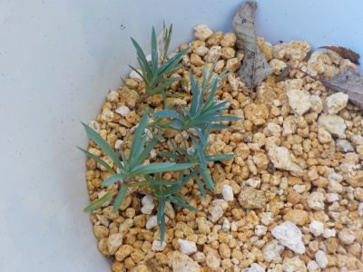
カーネーションを挿し木してから2月経ちましたが、まだ青葉のままです。
これは成功しているのかしれません。
寒い時期なので根っこの確認は春までしないつもりです。
春が楽しみです。
【カーネーションTOP】 【花TOP】 【園芸TOP】
2021/10/31
マミーキッスが間延びして恰好悪い。
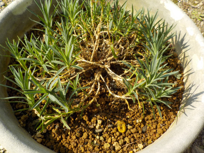
葉っぱが外側に成長したぶん、内側は茎だけになってしまいました。
骨っぽくて恰好悪い。
切り戻しをするといいのかな？でもそんなに大きくはない。とりあえず放置します。
【カーネーションTOP】 【花TOP】 【園芸TOP】
2021/09/26
カーネーションの挿し芽
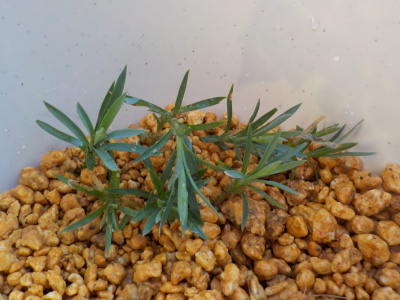
秋になったのでカーネーションの挿し芽に挑戦です。
底面給水鉢に7本挿しました。今回は成功するかな？
【カーネーションTOP】 【花TOP】 【園芸TOP】
2021/07/25
カーネーションの挿し芽が枯れました。
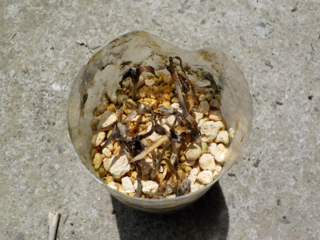
簡単にはいかないですね。
秋になったらまた挑戦しようと思います。
【カーネーションTOP】 【花TOP】 【園芸TOP】
2021/07/03
梅雨ですがカーネーションを日陰に移動しました。
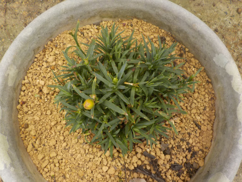
気温が高くなったのでカーネーションを日陰に避難させました。
まだしばらく大丈夫かもしれませんが、念のためです。
普通の背が高いカーネーションは強そうなおで、日向にそのまま置いています。
【カーネーションTOP】 【花TOP】 【園芸TOP】
2021/06/26
カーネーションの挿し芽をしました。
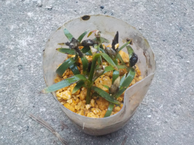
先日買ったカーネションのマミーキッスの挿し芽をしました。
株がまだ小さく、いい感じの長さの芽が少ないので、花が終わった茎を使って挿しました。
これで育ったら簡単に増やせていいですね。
【カーネーションTOP】 【花TOP】 【園芸TOP】
2021/06/05
カーネーションのマミーキッスは平べったい花でした。
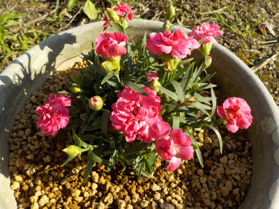
カーネーションってふわふわしたイメージがあったんですが、これはちょっと違うかな。
株が大きくなったら感じが変わるのかな？
今後の成長に期待します。
【カーネーションTOP】 【花TOP】 【園芸TOP】
2021/05/29
カーネーションのマミーキッスを買いました。
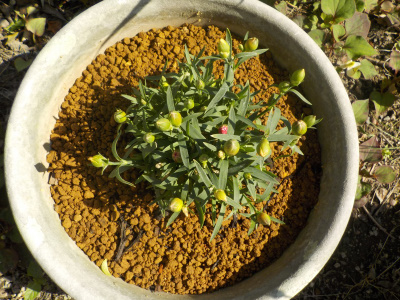
母の日が終わったせいか、ホームセンターでカーネーションが安売りしていました。
ツボミが沢山あり、これからがシーズンのものを安売りって「お得だ」って思い買いました。税込み220円でした。
でもポットの中は根っこがぎっしりしていたので、ちょっと状態は悪かったかな。
大きな鉢に植替えしました。今後の花が楽しみです。
【カーネーションTOP】 【花TOP】 【園芸TOP】
2021/05/09
カーネーションってくしゃくしゃですよね。
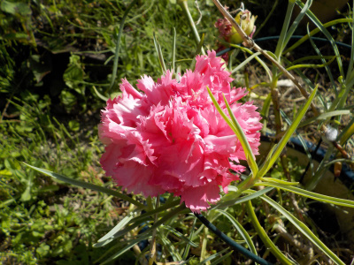
母の日に庭でカーネーションが咲いていました。
この花は特にそうなんですが、カーネーションってくしゃくしゃしてますよね。
よく見ると可愛くない気がします。
【カーネーションTOP】 【花TOP】 【園芸TOP】
2020/06/28
カーネーションはフサフサしたのがいいです。
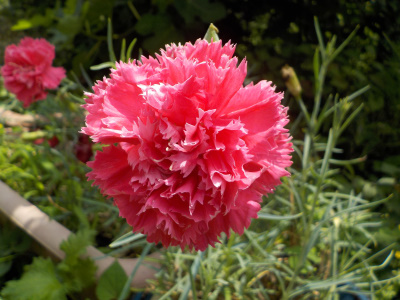
カーネーションは花びらが多いのが好きです。
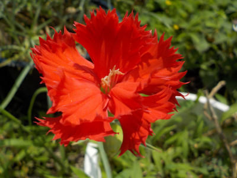
こんな感じのカーネーションはなんか嫌だな。
個人的な意見です。
【カーネーションTOP】 【花TOP】 【園芸TOP】
2020/05/10
投げっぱなしで伸びっぱなしのカーネーションを切りました。
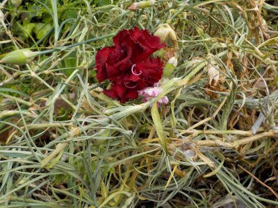
カーネーションを放置していたら、茎がドンドン伸びてこんがらがってしまいました。
カーネーションは花が終わったら丈が伸びないように切らないといけない様です。
今日は母の日ってことで、花を見終わったらバッサリ切りました。
【カーネーションTOP】 【花TOP】 【園芸TOP】
2018/08/05
カーネーションが枯れてます。
酷暑のせいですかね。
ほぼ枯れました。

夏に駄目になるのはわかってたけど、ここまでなるとは。
夏は暑くならない場所に移動させないと駄目ですね。
秋に復活できたら、来年からは気をつけます。
【カーネーションTOP】 【花TOP】 【園芸TOP】
2018/05/27
カーネーションの挿し木に挑戦
3本だけカーネーションを挿し芽しました。
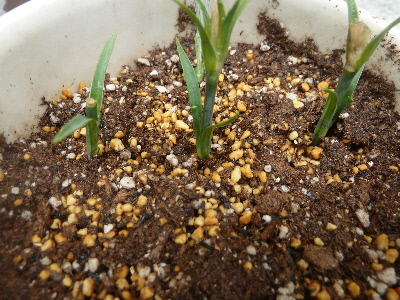
本当は何本もしたかったんですが、丁度いいサイズの茎がなくてできませんでした。
家にあるガーデンカーネーションは背が低いので、挿すだけの長さがありませんでした。
今後、長い茎をみつけたら追加して挿していこうと思います。
【カーネーションTOP】 【花TOP】 【園芸TOP】
2018/05/19
母の日のカーネーション
母の日の買ったカーネーションが、翌年も枯れずに咲くっていいですね。
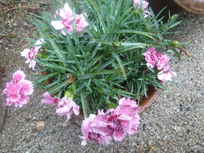
来年も咲かせたいです。
【カーネーションTOP】
【花TOP】
【園芸TOP】
畑仕事じゃないよ。
【おいしいものを食べよう。】【たくさん寝よう。】
【ソロ活をしよう!】【季節感のあることをしよう。】【動画視聴はほどほどに。】【当サイトの全てのコンテンツは無断転載禁止です。】